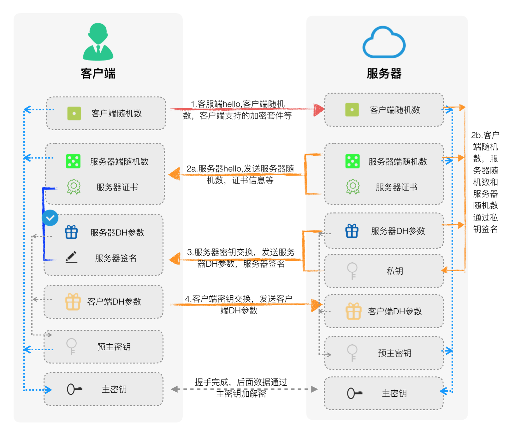

SSL的相关概念
SSL(Secure Sockets Layer)是Netscape网景公司最早研发，SSL从最早的1.0发展到2.0，3.0。后来考虑标准化的时候需要摆脱公司的影响，重新命名为TLS,Transport Layer Security。演进的版本依次为
1.0，1.1，1.2, 1.3应该还没有发布。
为什么会有SSL呢

SSL的基础体系PKI
PKI的全称为Public Key Infrastructure。百科上说：PKI是一种遵循标准的利用公钥加密技术为电子商务的开展提供一套安全基础平台的技术和规范。那么PKI规范，包含哪些东西呢？
在说包含哪些东西之前，我们先思考一下，从电子商务的角度触发，会面临哪些问题？
- 保密性 比如在传输中不给窃听盗取
- 完整性 在传输过程中，不能被篡改
- 身份认证和授权 对面是人是鬼？要能确认对方身份
- 防止抵赖 交易完成后，不承认怎么办？
所以PKI体系需要解决上面的问题。
- 完美的加密算法确保保密性和完整性，这部分就是SSL/TLS的算法部分需要提供的功能
- CA认证中心 整个体系的核心。是对身份确认的权威机构
- 证书服务器。公开证书信息，以便用户查询证书信息或者黑名单信息等
- Client和Server系统
- 等等
加密算法
我们知道，在传输过程中，为了保密，发送方需要把数据进行加密，接收方进行解密。其他人拿到中间数据后，因为没有密钥，所以干着急,没有办法解密。
加密算法通常是说对称加密算法，目前在SSL中使用最广泛的是AES(Advanced Encryption Standard)
以前比较常用的是DES、3DES（TripleDES），但现在已经过时。这些算法都是块加密算法，也就是对特定bit的块，一块一块的加密。目前AES都是对128字节大小的块做加密。但我们在算法里可以看到AES128和AES256，这些说的不是加密块的大小，而是密钥的大小。
1 | ECDHE-RSA-AES256-GCM-SHA384 TLSv1.2 Kx=ECDH Au=RSA Enc=AESGCM(256) Mac=AEAD |
密钥交换算法
上面提到的加密算法都是对称加密算法，也就是双方都需要知道加密的密钥，根据其来进行加密解密，所以密钥是安全体系的重中之重，但这密钥怎么传输呢？传输密钥的算法就是密钥交换算法。
目前有两类主流的密钥交换算法
- RSA
- DH/ECDH
RSA算法一个比较古老但还流行的算法，三位数学家Rivest、Shamir 和Adleman搞出来的。我们可以简单的说一下RSA加密原理，一句话：1
计算2个大数的乘积很容易,但把大数做质数分解确很难
想了解RSA的算法原理以及证明，可以参考：http://abonege.github.io/2018/01/31/RSA算法证明/
目前RSA是加密密钥长度已经达到2048位，在量子计算机出关之前，想破解基本没戏了。
DH/ECDH算法，是另外一种密钥交换算法，具体的数学原理很复杂，我们可以举个例子，简单的比喻一下：1
2
3
4
51.Alice和Bob说，我们有个共同的参数15(公开信息).
2.Alice产生一个随机数3（私钥），然后发给Bob 3+15
3.Bob产生一个随机数9（私钥），然后发给Alice 9+15
4.Bob收到18，计算自己的密钥 18 + 9 = 27
5.Alice收到24，计算自己的密钥 24+3 = 27
这样Alice和Bob协商出来了一个加密密钥
上面的2，3使用的算法只是简单的+，但DH算法本身是使用离散对数的原理。可以参考这个图：
后来，人们又对DH算法做了改进，即ECDH(Elliptic Curve Diffie–Hellman)，主要是为了缓解上图中p和g的生成代价,在算法上也增加了破解难度。
但现在目前使用的最广泛，也基本是唯一推荐的是ECDHE算法，什么是ECDHE呢？
我们得先看看DH算法的分类：
- Anonymous Diffie-Hellman
- Fixed Diffie-Hellman
- Ephemeral Diffie-Hellman
第一个是匿名DH算法,不认证公钥的合法性的，所以很容易收到中间人的攻击(Man-in-the-Middle attacks)。
第二个是固定的公钥参数. 这时类似RSA，把公钥的参数，即前面提到的p,g,A,都写入到证书，然后由CA签名，从此千秋不变。当然这时候私钥也是不变的。
第三个是临时的公钥参数，即每次A都是临时算出来的，也是目前主要使用的，即ECDHE，为什么呢？
因为下面这个小伙：
ECDHE算法想要避免的问题就是：向前安全性
当前RSA算法的加密密钥计算过程如下：
所以，拿到原始报文后，只要有朝一日，拿到私钥，就可以算出加密密钥，从而破解。
ECDHE算法就是为了避免这个事情，密钥的协商，都是临时的，阅后即焚，无法复现。但这时候的问题是，临时生成的公钥，如何避免中间人攻击，即
如何证明自己是可信的呢？这时候就轮到当前的主角ECDHE-RSA出场了。
DH算法的公钥需要使用RSA的私钥做签名。对方使用RSA的公钥来验证DH公钥的合法性。
HASH算法
前面提到的都是加密算法，很重要，如果中间者虽然不能窃听，但篡改包还是可以的，所以需要接受者知道收到的包是否经过篡改。这就是MAC(Message Authentication Code)算法。目前支持两种MD5(Message Digest 5)和SHA(Secure Hash Algorithm)。收到包后，先解密，然后看MAC的一致性，如果不一致，则直接丢弃该报文。
证书与签名
证书是什么呢？证书是权威机构颁发的，供个人或机构来证明自己合法身份的证明。目前有这么几类证书：
Class 4 SSL证书：即EV SSL证书，顶级SSL证书，又称扩展验证型SSL证书。安全级别最高，验证审核最严格，网站部署EVSSL证书后，浏览器地址栏将变成绿色并显示企业名称。EV SSL证书一般应用于金融、银行、电商等安全需求较高的网站。比如
https://ebsnew.boc.cn/boc15/login.htmlClass 3 SSL证书：即OV SSL证书，专业级SSL证书，又称机构验证型SSL证书。当前广泛应用的SSL证书，需要验证企业身份信息后颁发。OV SSL证书是当前最常见的证书类型，适用于行政、企业、科研、邮箱、论坛等各类大中型网站。
Class 2 SSL证书：即IV SSL证书，个人级SSL证书，沃通特有的SSL证书，又称个人验证型SSL证书。验证个人详细信息后颁发，主要应用于私人博客、自媒体等个人网站。
Class 1 SSL证书：即DV SSL证书，基础级SSL证书，又称域名验证型SSL证书。DV SSL证书是签发只验证域名所有权，快速颁发的SSL证书，安全级别较低。
证书长什么样子呢？列举百度的证书
1 | Certificate: |
大部分字段，我们通过名字，能猜出来是什么意思。关于Modulus和Exponent，不用细追究，它们是生成公钥的2个输入，公钥并不像私钥那样直接提供。而是提供了2个数，一个指数，一个是模数。这2个数可以直接生成公钥。
后面还有一个签名，算法为sha256WithRSAEncryption，意思是对证书先用sha256创建指纹摘要，然后使用CA的RSA私钥加密。浏览器如何验签呢？
- 证书使用sha256算法加密后和下来的指纹是否一致
- 使用CA的公钥解密签名，看是否和指纹一样
- 还有证书过期，吊销等验证
怎么认证证书的合法性呢？
我们的操作系统内置了很多root CA，这些CA都是有颁发签署新证书能力的。再其颁发的所有证书上，都有CA对这个证书的签名（用CA私钥）。浏览器拿到证书后，可以下载到CA的公钥，然后用公钥验证签名。从而知道证书的合法性。
继续签名
CA帮助我们的证书做了签名，证明了这个证书的合法性。但是我们client/server实际交互的时候，还需要一个签名，这个签名是保证，server确实拥有这个证书，别人休想模仿我。
对于RSA来讲，这个问题是简单的。因为证书里有被CA签名过的server的公钥，client既然能使用这个公钥和server完成密钥协商，那么server一定是合法拥有这个证书的。
我们主要讨论后来广泛使用的ECDHE，考虑向前安全性，ECDH已经基本废了。ECDHE都是临时生成对称密钥的方式，证书里的公钥对应的私钥（保存在服务器中）没有用于协商密钥。
只有让其参与到ssl过程中来，才能证明其合法的拥有证书。所以ECDHE是需要签名的（这里的签名是数据传输过程中的签名，不是证书签名）。
通常有两种RSA和ECDSA。
先说RSA，为了证明server对这个证书的合法拥有，在server-key-exchange消息的时候，回把这个消息签名（使用证书私钥+RSA算法）
再说ECDSA
对于ECDSA来讲，普通的证书是无法使用的，我们需要使用ECC证书，也就是证书上需要有ECC算法的公钥，我们才能使用此公钥对应的ECC私钥做签名。
SSL协议
前面介绍了很多SSL的概念，知道这些概念后，了解SSL协议就方便很多了。
SSL协议可以认为是L5层协议，即会话层。看下图：
SSL的交互过程
我们先看一下SSL有哪些类型的消息
- Alert
- ApplicationData
- Certificate
- CertificateRequest
- CertificateVerify
- ChangeCipherSpec
- ClientHello
- ClientKeyExchange
- Finished
- HelloRequest
- ServerHello
- ServerHelloDone
- ServerKeyExchange
基于RSA的握手
再看基于ECDHE的握手

session ID与 session ticket
为了减少SSL的握手过程，ssl协议提供了两种方案
- session id
- session ticket
session id是在加密信道种server传输一个session id给client，下次client在client hello消息中带上这个session id，server根据这个session id，就可以找到之前的master key，然后就可以直接通讯了。从而可以免去握手的过程。
session id也有缺点：
- server需要维护很多session id以及其加密密钥的映射广西
- 对于nginx/haproxy等集群设备来讲，彼此之间同步session id很是费力，否则session id无法使用。
session ticket在一定程度上能解决上面的问题。server会给client一个session ticket。下次client hello的时候带上这个ticket。
server对ticket进行解密（解密算法或密钥是server 控制的）。解密后可以得到原来的密钥，算法等信息。是不依赖server存储类似session id这样的东西的。
session ticket也有缺点：
- rfc提到的很好，让server定期更新ticket的加密密钥，但网站部署者基本不会执行。所以一旦拿到STEK（Session Ticket Encryption Key）就完美绕开ECDHE，直接解密这些数据。（注意这里不一定是网络盗取STEK，也可能是行政获取）
- 拿到STEK后，不仅能解密当前的copy的数据，也能解密之前的或是别的connection的数据（因为大家都是用这个STEK加密），先前兼容性全都没了。
关于keyless方案
keyless方案的出现，是基于如下的前提。
- 在云环境中，很多客户不愿意把私钥交出来
- 异地做RSA的私钥加解密操作能带来很多扩展，尤其是在设备进云的时候
使用私钥的操作为RSA握手时premaster私钥解密和DH握手时使用RSA私钥的签名。
在openssl环境中如何设计keyless方案
现在很多应用都是基于openssl开发的，比如nginx，haproxy等。平滑的支持keyless方案是很基本的一个需求。
幸好，openssl-1.1的ASYNC提供了一个简单的异步的机制。让我们可以在engine层面支持keyless，而且让上层应用基本不感知。但这个异步和aio，epoll那些还是不一样的。他就是提供了一种类似携程的东西，来完成一些SSL的异步操作。从release note上看，也一直提是为了”asynchronous capable engine”。
但整个方案还是需要依赖epoll等异步io机制。比如触发IN事件的时候去做SSL_read或者SSL_do_handshake这样的操作，但这些操作会返回SSL_ERROR_WANT_ASYNC,告诉app，等机会再来一次。
什么是engine呢？
engine是一个一个的so，每个so实现了openssl规定的一组函数：1
2
3
4
5
6
7
8int ENGINE_set_RSA(ENGINE *e, const RSA_METHOD *rsa_meth);
int ENGINE_set_DSA(ENGINE *e, const DSA_METHOD *dsa_meth);
int ENGINE_set_EC(ENGINE *e, const EC_KEY_METHOD *ecdsa_meth);
int ENGINE_set_DH(ENGINE *e, const DH_METHOD *dh_meth);
int ENGINE_set_RAND(ENGINE *e, const RAND_METHOD *rand_meth);
....
int ENGINE_set_ciphers(ENGINE *e, ENGINE_CIPHERS_PTR f);
int ENGINE_set_digests(ENGINE *e, ENGINE_DIGESTS_PTR f);
在engine中，可以自由实现你想独特实现的算法，比如rsa,只需定义好如下的函数，注册给engine即可1
2
3
4
5
6
7
8
9
10
11
12if ((dasync_rsa_method = RSA_meth_new("Test Async RSA method", 0)) == NULL
|| RSA_meth_set_pub_enc(dasync_rsa_method, dasync_pub_enc) == 0
|| RSA_meth_set_pub_dec(dasync_rsa_method, dasync_pub_dec) == 0
|| RSA_meth_set_priv_enc(dasync_rsa_method, dasync_rsa_priv_enc) == 0
|| RSA_meth_set_priv_dec(dasync_rsa_method, dasync_rsa_priv_dec) == 0
|| RSA_meth_set_mod_exp(dasync_rsa_method, dasync_rsa_mod_exp) == 0
|| RSA_meth_set_bn_mod_exp(dasync_rsa_method, BN_mod_exp_mont) == 0
|| RSA_meth_set_init(dasync_rsa_method, dasync_rsa_init) == 0
|| RSA_meth_set_finish(dasync_rsa_method, dasync_rsa_finish) == 0) {
DASYNCerr(DASYNC_F_BIND_DASYNC, DASYNC_R_INIT_FAILED);
return 0;
}
不愿意或没必要实现的，可以利用原来的默认算法。
那么openssl里的ASYNC机制的原理是什么呢？
有一个基本的概念叫job。可以认为是我们的一次加密/解密操作。举例说，当client发送一个pre-master secret过来的时候，
server需要拿自己的私钥解密，这个解密需要把私钥和pre-master secret一起扔到ssl offload server。这时，主程序不能等着啊，你先慢慢解，我一会来接你啊
这里面就有2个问题了：
- 什么时候来接你？
- 接你的时候，你还是那个你么？
针对第一个问题，是需要程序作者需要维护的，比如我们需要一个epoll轮询发现解密后的数据回来了，则知道要接了。对第二个问题是更棘手些的，『你还是那个你么』
说的是，当前的上下文，还是那个上下文么？
比如我的异步解密函数如下
1 | int my_rsa_decrypt(arg1, arg2, arg3) |
假设我们异步的函数是do_async_job，我们在异步操作之前已经计算出来2个数,data1_important和data2_important。那我们理想的接上的方式，就应该是
直接执行do_async_job的下一行，且拿到了async_result这个值。没错，ASYNC就这么干的。因为他把当前的栈保存下来了。
举SSL_do_handshake为例，我们简述一下流程：
- 在第一次调用SSL_do_handshake的时候，需要异步，会调用ASYNC_start_job开启一个job，并切换到job去执行（注意这里保存了『接你』栈）
- job的func因为不能马山就绪，所以调用ASYNC_pause_job返回一个SSL_ERROR_WANT_ASYNC说等等
- 多了一会，条件好了（pre-master secret解密数据回来了），主程序二次调用SSL_do_handshake
- 在SSL_do_handshake里，会找到当前的job，然后调用ASYNC_start_job，恢复『接你』栈继续执行，从而透明的得到了一个SSL_do_handshake的结果，像什么都没发生一下样
看起来挺简单的，但实际上，我们面临的问题是，谁来驱动和远端通讯的socket（加入使用tcp的话）。
这时候，大部分需要app感知了。举nginx为例，修改后的nginx如下：
nginx的epoll需要额外托和keyless server通讯的socket，幸好pipe socket不需要。